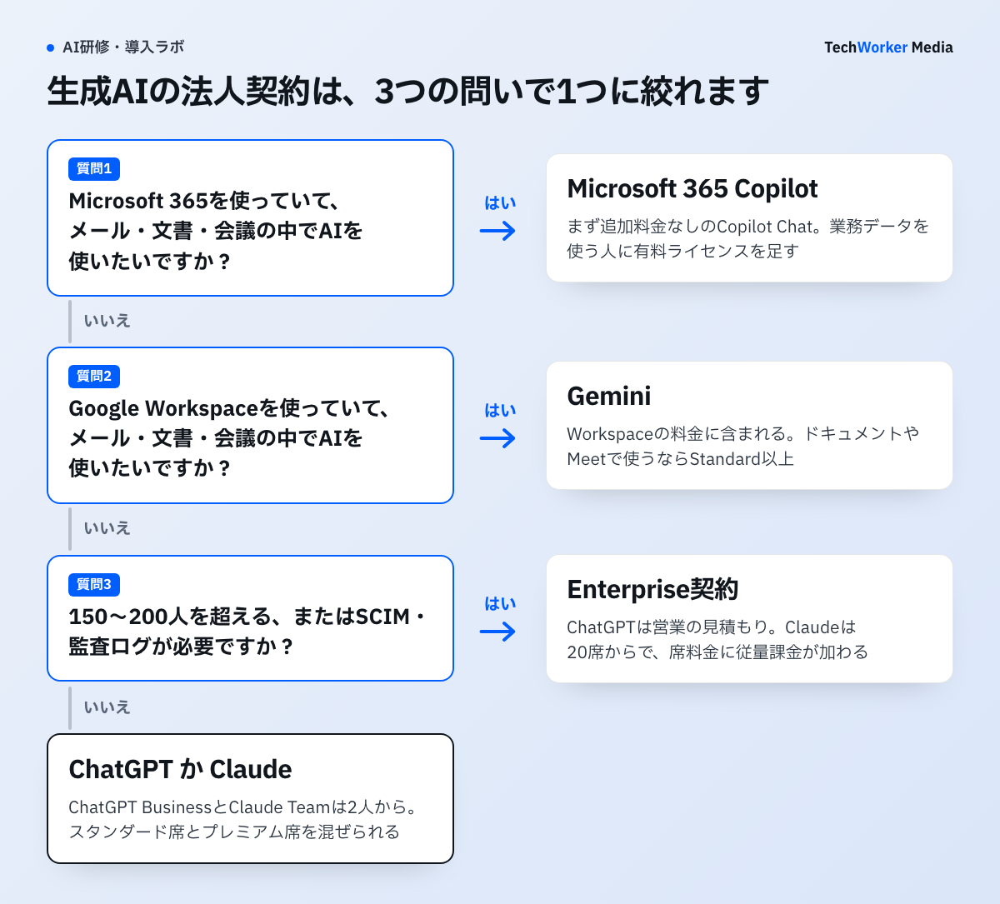

生成AIを会社で契約するときの主な候補は、ChatGPT、Claude、Gemini、Microsoft 365 Copilotの4つです。入口になる契約の料金は、次のとおりです（1人あたりの月額、年払い）。
- ChatGPT Business：20ドルです。2〜200人で契約できます。
- Claude Team：22ドルです（日本向けの表示、消費税10%込み）。2〜150人で契約できます。
- Gemini：Google Workspaceの料金に含まれます。Workspaceは800円からで、Businessプランは最大300人です。
- Microsoft 365 Copilot Business：Microsoft 365に3,148円（税別）を追加します。最大300人です。
4社とも、法人契約のデータは既定でモデルの学習に使わないと公式に書いています。差が出るのは、契約できる人数の範囲と、SCIMや監査ログが付く契約、既に使っている業務ソフトとの関係です。この記事では4社の公式ページを2026年11月11日に確認し、1枚の表にまとめました。
公式ページでは人数によって契約がどう分かれていますか？
4社とも、少人数で始める契約と、大きな組織向けの契約の2段に分かれています。
公式の説明（日本語ページ）Microsoft Copilot Business は、適格な Microsoft 365 Business ライセンスを持つユーザー数が最大 300 人の組織向けのアドオンです。（中略）ユーザー数が 300 人を超える組織では、エンタープライズ環境向けに設計された Microsoft Copilot ライセンス オプションを使用する必要があります。
引用はMicrosoftのライセンスの説明です。300人を境に、買える契約が変わります。ほかの3社にも同じ形の境目があります。
- ChatGPT：Businessは2〜200人のチーム向けです。それより大きい組織向けにEnterpriseがあり、料金は営業の見積もりで決まります。
- Claude：Teamは2〜150人です。Enterpriseは最低20席からです。
- Gemini：Google WorkspaceのBusinessプランは最大300人です。Enterpriseプランには人数の上限も下限もありません。
この引用から分かるのは、人数の境目だけです。料金やデータの扱いは、次の表で確認します。
4社の法人契約を1枚で比べると、どうなりますか？
入口の料金は、単独で契約するChatGPTとClaudeが月20ドル台です。GeminiとCopilotは、業務ソフトの料金とひとまとまりで決まります。
| 比べる点 | ChatGPT | Claude | Gemini | Microsoft 365 Copilot |
|---|---|---|---|---|
| 入口の契約 | ChatGPT Business | Claude Team | Google Workspace Business（Geminiを含む） | Microsoft 365 Copilot Business（Microsoft 365への追加） |
| 1人あたりの月額（年払い） | スタンダード席 20ドル（円の表示は3,050円から） プレミアム席 100ドル | スタンダード席 22ドル プレミアム席 110ドル （消費税10%込みの表示） | Starter 800円 Standard 1,600円 Plus 2,500円 | 3,148円（税別） 2026年12月31日までの割引は初年度2,698円 Microsoft 365の料金は別 |
| 月払いの料金 | 25ドル／125ドル | 27.50ドル／137.50ドル | 950円／1,900円／3,000円（年間プランにしない場合） | 年間契約が前提 |
| 契約できる人数 | 2〜200人 | 2〜150人 | 最大300人（下限の記載なし） | 最大300人（最低席数の記載なし） |
| 上位の契約 | ChatGPT Enterprise 料金は営業の見積もり | Claude Enterprise 1席月20ドル＋利用量の従量課金、最低20席 | Workspace Enterprise 料金は問い合わせ | Microsoft 365 Copilot 月4,497円相当（税別）、対象のMicrosoft 365ライセンスが別に必要 |
| モデルの学習への利用 | 既定で使わない | 既定で使わない（フィードバックを送った会話は使う場合がある） | 許可や指示なしには使わない。人によるレビューもしない | 基盤モデルの学習に使わない |
| SSO | SAML SSO（Businessから） | SSO（Teamから） | SAMLとOIDCのSSO | Microsoft Entraのアカウントでサインイン |
| SCIM（利用者情報の自動同期） | Enterpriseのみ | Enterpriseのみ | Workspaceのアカウントをそのまま使う | Microsoft 365のアカウントをそのまま使う |
| 監査ログ | Enterprise（Compliance APIのログ） | Enterprise（監査ログ、コンプライアンスAPI） | Geminiのログイベントあり。調査ツールでの検索はEnterprise Standard・Plusなどが対象 | Microsoft Purviewで監査と保持。使える制御は元のMicrosoft 365プランで変わる |
出典：OpenAI、Anthropic、Google、Microsoftの公式ページ（2026年11月11日確認）。料金は各社の表示のままで、通貨と税の扱いはそろえていません。
表を読むときの注意が3つあります。
- Claudeの料金は税込みの表示です。日本から料金ページを開くと、消費税10%込みで表示されます。税抜きに直すと、スタンダード席は20ドルです（22÷1.1）。
- Geminiは単独の料金ではありません。表の金額はGoogle Workspaceの料金で、メールやビデオ会議、ストレージを含みます。Starterに含まれるのは、GmailのGeminiとGeminiとのチャットです。ドキュメントやMeetのGeminiは、Standard以上で使えます。新規の契約には期間限定の割引が表示されますが、表には通常の料金を載せました。
- Copilotは二階建てです。Microsoft 365のライセンスに、Copilotのライセンスを足します。Microsoft 365とセットにした料金も公開されています。Business Standardとのセットは月3,523円相当、Business Premiumとのセットは月4,797円相当です（年払い、税別）。Coworkなど一部の高度な機能は、利用量に応じた課金になります。
Microsoft 365を契約している会社には、追加料金なしで使えるCopilot Chatもあります。対象のMicrosoft 365サブスクリプションを持つ利用者が、Microsoft Entraのアカウントで使うAIチャットです。有料のMicrosoft 365 Copilotとの違いは、メールやファイルなど社内の業務データをもとに答えられるかどうかです。
この比較表と稟議書の雛形は、下の枠から受け取れます。
10人で始めると、年額はいくらになりますか？
10人で1年使うと、単独で契約するAIは2,400〜2,640ドル、業務ソフトとひとまとまりの契約は約19万〜42万円です。
公式の単価に、10人と12か月を掛けた計算です。実際の請求額は為替や税、割引によって変わります。
| 契約 | 1人あたりの月額（年払い） | 10人の年額（計算） | 含まれるもの |
|---|---|---|---|
| ChatGPT Business（スタンダード席） | 20ドル | 2,400ドル （参考：366,000円） | AIのみ |
| Claude Team（スタンダード席） | 22ドル（税込） | 2,640ドル （参考：402,600円） | AIのみ |
| Google Workspace Business Standard | 1,600円 | 192,000円 | メール、文書、会議とGemini |
| Microsoft 365 Copilot Business（追加分） | 3,148円（税別） | 377,760円 | AIのみ。Microsoft 365は別 |
| Microsoft 365 Business StandardとCopilot Businessのセット | 3,523円（税別） | 422,760円 | メール、文書、会議とCopilot |
計算：単価×10人×12か月。円の参考額は、OpenAIの料金ページが20ドルの席を3,050円からと表示している比率（1ドル＝152.5円、2026年11月11日の表示）で換算しました。
この表だけで安い高いを決めることはできません。Google WorkspaceとMicrosoft 365のセットは、メールや文書のソフトの料金を含みます。既にどちらかを契約している会社にとって、追加で払う額は表より小さくなります。
ChatGPTとClaudeのプレミアム席は、スタンダード席の5倍の料金です。両社とも、スタンダード席とプレミアム席を1つの契約の中で混ぜられます。全員をプレミアム席にせず、利用量の多い人から割り当てます。
Claudeの上位モデルFable 5.2は、Teamのプレミアム席なら週の利用枠の半分まで追加料金なしで使えます。標準席では使った分の支払いです。詳しくはClaude Fable 5.2の料金と法人利用で説明しています。
自社に合う1つはどう選べばよいですか？
既に使っている業務ソフト、使い方、人数の3つを順に確かめると、最初の契約を1つに絞れます。

図の順番はTechWorkerが契約の相談を受けるときの整理です。公式の条件をもとにしていますが、各社が示している選び方ではありません。
- 既に使っている業務ソフトを確かめます。メール、文書、会議の中でAIを使いたい場合は、その業務ソフトに付くAIが第一候補です。Microsoft 365の会社はCopilot、Google Workspaceの会社はGeminiです。社内のデータが既にそこにあり、アカウントと権限の管理もそのまま使えます。
- 使い方を確かめます。業務ソフトの外で、調べものや文章の作成、コードの作成に使う場合は、ChatGPTかClaudeが候補です。ChatGPT BusinessにはCodexが、Claude TeamにはClaude Codeが含まれます。2つの契約条件は近いため、公式の条件だけでは決まりません。現場が既に使い慣れている方を2〜4週間試して、決めることを勧めます。
- 人数と統制の要件を確かめます。ChatGPT Businessは200人、Claude Teamは150人までです。これを超える場合はEnterpriseになります。SCIMや監査ログが契約の条件になっている場合も同じです。
Microsoft 365の会社は最初から全員に有料のライセンスを配る必要はありません。まず追加料金なしのCopilot Chatを使い、社内の業務データをもとに答えを得たい人にだけ、有料のライセンスを足す進め方ができます。無償の範囲と有料版の違いは、Copilot Chatと有料版の研修の分け方で説明しています。
1社ごとの詳しい料金と契約の手順は、個別の記事にまとめています。
GeminiとCopilotの2つで迷っている場合は、GeminiとCopilotの比較も参考になります。
入力したデータはAIの学習に使われますか？
4社とも、法人契約のデータは既定でモデルの学習に使わないと公式に書いています。
書き方は会社ごとに少し違います。稟議や社内の規程に引用するときは、次の違いを押さえておきます。
- ChatGPT：BusinessとEnterpriseのデータは、入力と出力を含め、既定でモデルの学習や改善に使われません。
- Claude：商用製品の入力と出力は、既定でモデルの訓練に使われません。ただし、利用者が評価ボタンなどでフィードバックを送った場合は、その会話が訓練に使われることがあります。TeamとEnterpriseの管理者は、メンバーがフィードバックを送る機能を止められます。
- Gemini：Google Workspaceは事前の許可や指示なしに顧客データをモデルのトレーニングに使いません。コンテンツを人がレビューすることもありません。
- Microsoft 365 Copilot：プロンプト、応答、Microsoft Graphを通じて参照されるデータは、基盤モデルのトレーニングに使われません。追加料金なしのCopilot Chatにも、同じデータ保護が適用されます。
注意が必要なのは、個人向けプランです。ChatGPTの個人向けプランは、料金ページの表で「学習への利用を拒否可能」となっています。Claudeの個人向けプランも同じ項目が「オプトアウト」です。どちらも、利用者が自分で設定を変えて止める方式です。会社のカードで個人向けプランの料金を払っても、法人契約と同じ扱いにはなりません。
データの保存地域を指定したい場合は、上位の契約が必要です。ChatGPTはEnterpriseで日本を含む10の地域のデータレジデンシーに対応しています。Businessは対象外です。
SSO・SCIM・監査ログはどの契約から使えますか？
SSOは4社とも入口の契約から使えます。ChatGPTとClaudeのSCIMと監査ログは、Enterpriseだけです。
SSOは会社のIDで一度ログインすれば複数のサービスに入れる仕組みです。SCIMは入社や退職に合わせて利用者の情報を自動で同期する仕組みです。
- ChatGPT：BusinessにSAML SSO、多要素認証、管理コンソール、ドメイン認証が含まれます。SCIM、ロールベースのアクセス制御、Compliance APIのログ、IP許可リストはEnterpriseだけです。
- Claude：TeamにSSOと一元的な請求・管理が含まれます。SCIM、監査ログ、コンプライアンスAPI、カスタムのデータ保持はEnterpriseだけです。
- Gemini：Google WorkspaceはSAMLとOIDCのSSOに対応しています。Geminiの利用はログイベントとして記録されます。ただし、セキュリティ調査ツールでログを検索できるのは、Enterprise StandardやEnterprise Plusなどです。公式の対象エディションに、Businessプランは載っていません。
- Microsoft 365 Copilot：利用者はMicrosoft 365と同じMicrosoft Entraのアカウントでサインインします。Copilotは秘密度ラベルと保持ポリシーを引き継ぎ、やり取りの監査に対応します。使える制御は元のMicrosoft 365のプランによって変わります。
SSOだけを理由に上位の契約へ進む必要はありません。上位の契約が必要になるのは、退職者のアカウントを自動で止めたい場合や、利用の記録を監査で提出する場合です。
申込みから利用開始まで、どんな手順で進めますか？
今の契約の確認、候補の絞り込み、少人数での試用、管理設定、稟議、席の配布の6つの手順で進めます。
TechWorkerが勧める進め方です。
- 今の契約を確かめます。Microsoft 365とGoogle Workspaceのどちらを、どのプランで契約しているかを確認します。Microsoft 365の会社はCopilot Chatを既に使える状態かどうかも見ます。
- 候補を1つに絞ります。上の3つの問いで決めます。この段階では複数のAIを同時に契約しません。
- 2〜4週間、少人数で試します。対象の業務を決め、導入前後の所要時間を記録します。ChatGPT BusinessとClaude Teamは2人から契約でき、月払いも選べます。Google Workspaceには14日間の無料試用があります。
- 管理の設定を済ませます。SSO、ドメインの確認、メンバーの権限、外部ツールとの連携の可否を設定します。学習に使われない設定になっているかも、管理画面で確認します。
- 稟議を通します。試用で測った利用量と効果をもとに、年額と人数を決めます。
- 席を配り、使い方をそろえます。入力してよい情報の範囲と、使う業務を利用者に伝えます。
支払い方法は契約によって違います。ChatGPT Businessはクレジットカードで購入します。請求書払いなどを希望する場合は、Enterpriseで営業に相談します。Claudeの請求書払いは営業担当を通したEnterprise契約だけが対象です。経理の処理に請求書が必要な会社は、先に確認しておきます。
稟議では何を聞かれますか？
聞かれるのは、なぜそのAIか、年額はいくらか、データは安全か、効果をどう測るか、やめる条件は何か、の5つです。
- なぜそのAIを選んだのですか。業務ソフト、使い方、人数の3つで絞った経過を、比較表と一緒に示します。
- 年額はいくらですか。単価×人数×12か月で出します。ドル建ての契約は換算に使った為替レートと日付を書きます。Copilotは元になるMicrosoft 365の料金も合わせて示します。
- 入力した情報は安全ですか。学習に使われないことを、公式ページの記載と確認日を添えて答えます。SSOと監査ログが使える契約かどうかも書きます。
- 効果はどう測りますか。試用で記録した所要時間の差に、自社の人件費を掛けます。他社の数字ではなく、自社の実測を使います。
- やめる条件は何ですか。利用率や効果が基準に届かないときの、縮小と解約の基準を先に書きます。年払いは途中でやめにくいため、最初の契約期間を月払いにする選択肢も示します。
料金と条件は変わります。この記事の数字をそのまま使わず、稟議を出す日に公式ページで確かめてください。
よくある失敗にはどんなものがありますか？
多いのは、個人向けプランのまま広げること、既に使えるAIを見落とすこと、人数の上限を見ずに契約することの3つです。
- 個人向けプランを経費で払い続ける。個人向けプランにはSSOも管理コンソールもありません。退職した人のアカウントに、会話の履歴が残ります。
- 既に使えるAIを見落とす。Microsoft 365の会社がCopilot Chatを知らずに、別のAIを全員分契約する例です。Google Workspaceの会社もプランにGeminiが含まれています。
- 月額だけで比べる。Copilotの3,148円はMicrosoft 365への追加分です。Workspaceの800円はメールやストレージを含む料金です。同じ表に並べるときは、何が含まれているかを書き添えます。
- 人数の上限を見ずに契約する。ChatGPT Businessは200人、Claude Teamは150人までです。全社へ広げる予定があるなら、Enterpriseへ切り替える時期と費用も先に確認します。
- 全員に同じ席を配る。ChatGPTとClaudeのプレミアム席は、スタンダード席の5倍の料金です。試用で利用量を見てから、割り当てを決めます。
- 契約しただけで終わる。使い方が分からないままだと利用が続かず、席の料金だけが残ります。使う業務と、入力してよい情報の範囲を、配布の前に決めます。
よくある質問
生成AIの法人契約で、一番安いのはどれですか？
追加で払う額だけを見ると、業務ソフトに付くAIが最も安くなります。Microsoft 365を契約している会社は、Copilot Chatを追加料金なしで使えます。Google Workspaceは月800円のBusiness StarterからGeminiを含みます。単独で契約するAIでは、ChatGPT Businessが1人月20ドル、Claude Teamが月22ドル（日本向けの表示、消費税10%込み）です。どちらも年払いの料金です。
1人だけでも法人契約できますか？
ChatGPT BusinessとClaude Teamは、2人からの契約です。1人で使う場合は個人向けプランになり、入力内容を学習に使わせない設定を自分で行う必要があります。Google WorkspaceのBusinessプランとMicrosoft 365 Copilot Businessは、公式の料金ページに最低人数の記載がありません。確認できたのは、どちらも最大300人までという上限です。
法人契約なら、入力した情報はAIの学習に使われませんか？
4社とも、法人契約のデータは既定でモデルの学習に使わないと公式に書いています。ただしClaudeは利用者が評価ボタンなどでフィードバックを送った会話を学習に使う場合があります。Googleは許可や指示がない限り使わないという書き方です。個人向けプランは扱いが異なるため、会社のカードで個人向けプランを払っても、法人契約の代わりにはなりません。
ChatGPTとClaudeの法人契約は、何が違いますか？
入口の料金と席の仕組みは、ほぼ同じです。違いは人数の上限と上位契約の料金の出し方です。ChatGPT Businessは2〜200人、Claude Teamは2〜150人が対象です。ChatGPT Enterpriseの料金は営業の見積もりで決まります。Claude Enterpriseは1席月20ドルに利用量の従量課金が加わる形で公開されており、最低20席です。
請求書払いはできますか？
ChatGPTとClaudeは上位の契約で請求書払いに対応します。ChatGPT Businessの支払いはクレジットカードで、請求書払いなどはEnterpriseで営業に相談します。Claudeの請求書払いは営業担当を通したEnterprise契約だけが対象です。GoogleとMicrosoftの支払い方法は、今回の確認範囲に含めていません。
出典と確認範囲
確認日：2026年11月11日。料金、プランの名称、機能は変更されるため、契約の前に公式ページで確認してください。料金は日本から各社のページを開いたときの表示です。選び方の図と手順は、TechWorkerの整理です。
- OpenAI「ChatGPT の料金（Business・Enterprise）」
- OpenAI「ChatGPT の料金」（個人向けプランと、よくある質問）
- OpenAI「ビジネスデータのプライバシー、セキュリティ、コンプライアンス」
- Anthropic「Claude の料金（Team・Enterprise）」
- Anthropic「私のデータはモデルトレーニングに使用されていますか？」
- Google「Google Workspace の料金プラン」
- Google「Google Workspace の生成 AI に関するプライバシー ハブ」
- Google「Gemini for Workspace のログイベント」
- Google「SSO の設定」
- Microsoft「Microsoft Copilot の価格（一般法人向けプラン）」
- Microsoft「大企業向けの Microsoft Copilot プラン」
- Microsoft Learn「Microsoft Copilot のライセンス オプション」
- Microsoft Learn「エンタープライズ データ保護」
- Microsoft Learn「Microsoft Copilot のデータ、プライバシー、セキュリティ」